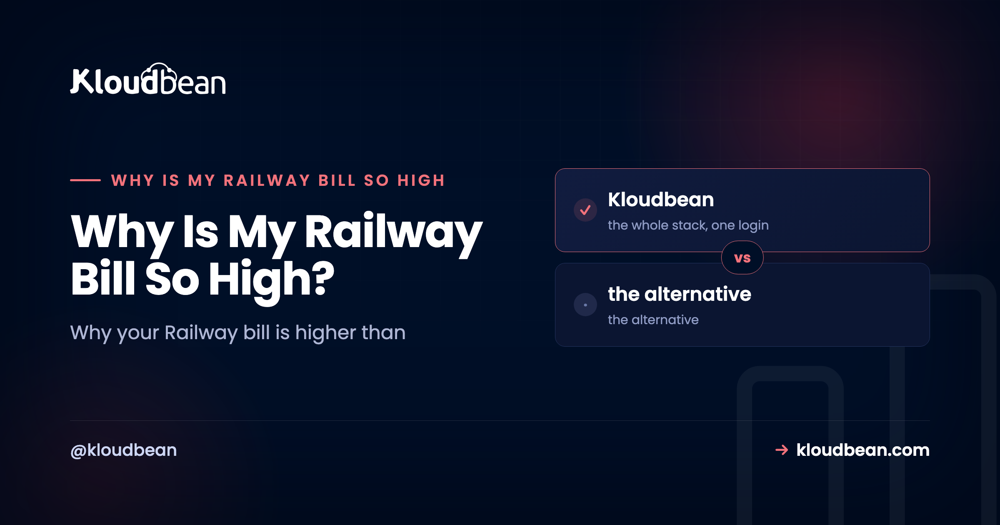

Why Is My Railway Bill So High? (And How to Make It Predictable)

If you're asking why your Railway bill is so high, you're in a big crowd. The confusion is almost always the same: the Hobby plan looks like $5 and Pro looks like $20, so people read those as a flat hosting price. They aren't. Railway charges a plan fee plus metered usage, and a running service costs money even when nobody's using it. This is what actually drives the number, how to get it under control, and when a flat-price host is simply a better fit.
Because the plan fee and your resource usage are two different things. Railway bills a subscription (about $5 Hobby or $20 Pro) plus metered CPU, RAM, databases, storage, and network egress on top, and a container is charged for the resources it holds even while idle. So a tiny test app with no users can still climb to $20 to $30 a month. Set a spending limit, keep database traffic on private networking, right-size or sleep idle services, and if you want a number you can budget, a flat-price host is a different model entirely.
What you're actually paying for
Railway's pricing is two layers, and the trouble starts when people only see the first. There's a plan fee, a subscription that also includes a small amount of usage (Hobby around $5, Pro around $20 per seat). Then there's metered usage: the CPU, memory, disk, database, and outbound network your services actually consume, billed on top once you pass what the plan includes. The headline number is the floor. The bill is the floor plus everything your app used.
That model is completely reasonable, and it's genuinely cheap for a small, sleepy project. The problem is purely mental math: the plan fee, the included usage, any prepaid credits, and the metered overage are four different things that are hard to combine in your head, so the invoice surprises people who expected a flat $5.
The usual suspects behind a surprise bill
When a Railway bill is higher than expected, it's almost always one of these. Open the one that sounds like yours.
Idle services still bill
Network egress you didn't expect
Databases and add-ons are separate meters
Plan fee vs included usage vs prepaid credit
A memory leak or oversized service
How to make Railway's bill predictable
You can tame the number without leaving. A few habits do most of the work:
- Set a hard spending limit. Railway lets you cap usage. Set it, so a runaway service or a traffic spike can't produce a surprise invoice.
- Keep internal traffic on private networking. Point your app at the database over the private network, not a public host, so those bytes aren't metered as egress.
- Right-size and remove idle services. Match RAM and CPU to what each service actually uses, and delete the demo you forgot about. Idle allocation is the quiet budget killer.
- Watch usage per service. Check the usage page regularly so you catch a climbing service before the invoice does.
Do those and Railway stays affordable for what it's best at: shipping fast. But if the reason you're here is that you want to know the number in advance, no amount of tuning changes the fact that it's a metered model. That's a different question.
Metered vs flat: two different deals
| Metered (Railway) | Flat (managed cloud) | |
|---|---|---|
| Idle cost | Still billed for allocation | Same fixed price |
| Traffic spike | Bill goes up | Bill unchanged |
| Database | Separate meter | Included in the plan, beside the app |
| Egress | Metered | Not metered (on Kloudbean) |
| Best when | Small or spiky, DX matters most | Always-on, you want a budgetable number |
When a flat-price host makes more sense
Here's the honest split. If your app is a prototype, or traffic is low and spiky, or you mostly value Railway's excellent developer experience, staying and tuning the bill is the right call. Railway is genuinely great at going from repo to live URL fast.
But if it's an always-on production app, it has a database, and you need a monthly number you can put in a budget, a flat-price managed host is a cleaner fit. On Kloudbean your Node app runs always-on under PM2, deploys from GitHub, and sits next to a one-click managed database in the same dashboard, on a flat plan from $8/mo with no egress meter. The bill is the same whether you get ten visitors or ten thousand. When you switch, free migration assistance runs the first cutover with you, database included. A widely shared sentiment from developers who moved off a metered platform: the new bill was sometimes higher, but they could finally stop watching the meter.

Reading around is My Railway Bill So High
Weighing your options? Render vs Railway vs Kloudbean compares all three, and the interactive Node.js host decision tool picks one for your situation. For the wider field, where to deploy a Node.js app. If a leak is inflating your bill, fix "JavaScript heap out of memory".
Fewer mysteries on the next deploy.
Build logs stream live in the console, deployment history keeps what happened, and the logs viewer separates app errors from web requests, so a failed start is a five-minute read rather than a guessing game.
- ✓ Live build logs
- ✓ Deployment history
- ✓ Logs viewer
- ✓ Managed process restarts
- ✓ Automatic backups
- ✓ Git deploy
Plans from $8/mo · Free migration assistance · Free trial
FAQ
Why is my Railway bill $30 for a tiny test service?
Because a running container is billed for the CPU and RAM it holds even with no users, and any database, storage, or egress adds on top of the plan fee. A small always-on service plus a database can reach $20 to $30 a month easily. Remove idle services, right-size the rest, and set a spending limit to keep it in check.
Does Railway charge for idle services?
Yes, in effect. You're billed for the resources a service has allocated while it's running, not only for active requests, so an idle-but-running container keeps costing money. If a service isn't needed, pause or delete it rather than leaving it up.
Why did my Railway services stop even though I had credit?
Developers report this when the balance that ran out isn't the one they expected. The plan fee, the usage included with it, and any prepaid credit are separate, and a service can pause when the relevant balance is exhausted. Check the usage and billing pages to see which balance ran down.
How do I set a spending limit on Railway?
Railway supports a usage or spending limit in the billing settings; set it so a runaway service or traffic spike can't produce a surprise invoice. Pair it with private networking for internal traffic and regular checks of the usage page. Treat the limit as a safety net, not a substitute for right-sizing.
Is Railway cheaper than a VPS or a flat-price host?
For a small, idle, or spiky app, often yes. For a steady always-on app with a database, a metered bill can pass a flat plan and keep climbing with traffic. Compare a busy month, not a quiet one, and include the database and egress. If predictability matters more than pay-as-you-go, a flat plan is easier to budget.
Is Railway a scam or overcharging me?
No. The billing is real metered usage, not a trick; the issue is that it's hard to predict because the plan fee, included usage, credits, and overage combine in ways that aren't obvious. Understanding the model, and setting limits, resolves most of the surprise. If you simply prefer a fixed number, that's a reason to choose a flat-price host, not evidence of wrongdoing.
How do I move a Node app off Railway without downtime?
Point a new server at the same GitHub repo, copy your environment variables, and restore the database with a standard dump and load. Bring it up, verify it, then switch traffic. Kloudbean's free migration assistance can run that first cutover with you so downtime stays minimal, database included.